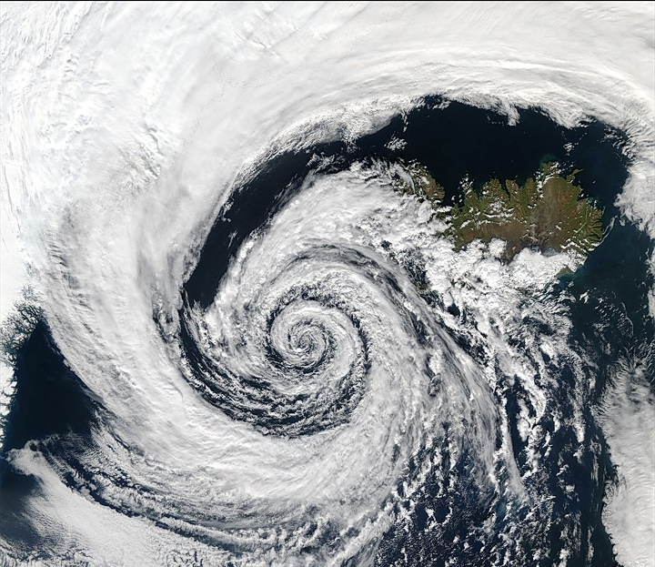

CYCLONE

A cyclone is a large scale air mass that rotates around a strong center of low atmospheric pressure, counterclockwise in the Northern Hemisphere and clockwise in the Southern Hemisphere as viewed from above (opposite to an anticyclone).Cyclones are characterized by inward-spiraling winds that rotate about a zone of low pressure.The largest low-pressure systems are polar vortices and extratropical cyclones of the largest scale (the synoptic scale). Warm-core cyclones such as tropical cyclones and subtropical cyclones also lie within the synoptic scale.Mesocyclones, tornadoes, and dust devils lie within smaller mesoscale.Upper level cyclones can exist without the presence of a surface low, and can pinch off from the base of the tropical upper tropospheric trough during the summer months in the Northern Hemisphere. Cyclones have also been seen on extraterrestrial planets, such as Mars, Jupiter, and Neptune.Cyclogenesis is the process of cyclone formation and intensification.Extratropical cyclones begin as waves in large regions of enhanced mid-latitude temperature contrasts called baroclinic zones. These zones contract and form weather fronts as the cyclonic circulation closes and intensifies. Later in their life cycle, extratropical cyclones occlude as cold air masses undercut the warmer air and become cold core systems. A cyclone's track is guided over the course of its 2 to 6 day life cycle by the steering flow of the subtropical jet stream.
Weather fronts mark the boundary between two masses of air of different temperature, humidity, and densities, and are associated with the most prominent meteorological phenomena. Strong cold fronts typically feature narrow bands of thunderstorms and severe weather, and may on occasion be preceded by squall lines or dry lines. Such fronts form west of the circulation center and generally move from west to east; warm fronts form east of the cyclone center and are usually preceded by stratiform precipitation and fog. Warm fronts move poleward ahead of the cyclone path. Occluded fronts form late in the cyclone life cycle near the center of the cyclone and often wrap around the storm center.